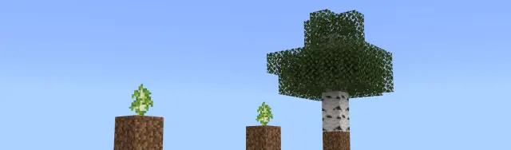
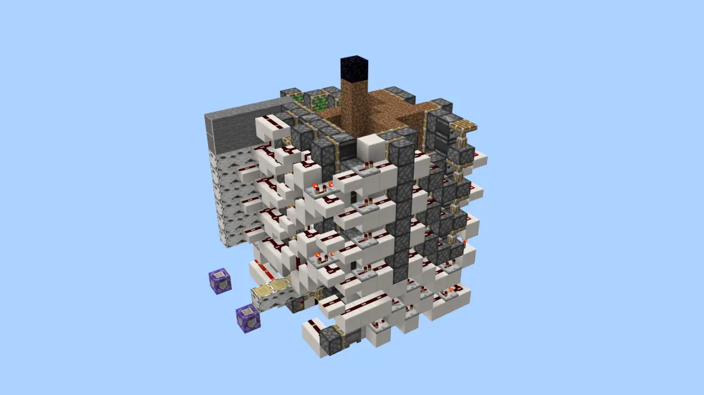
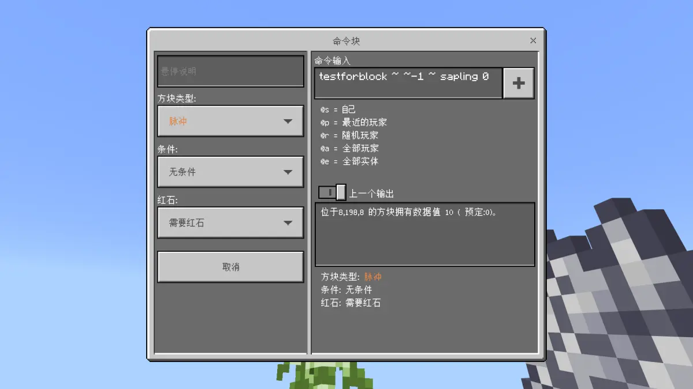
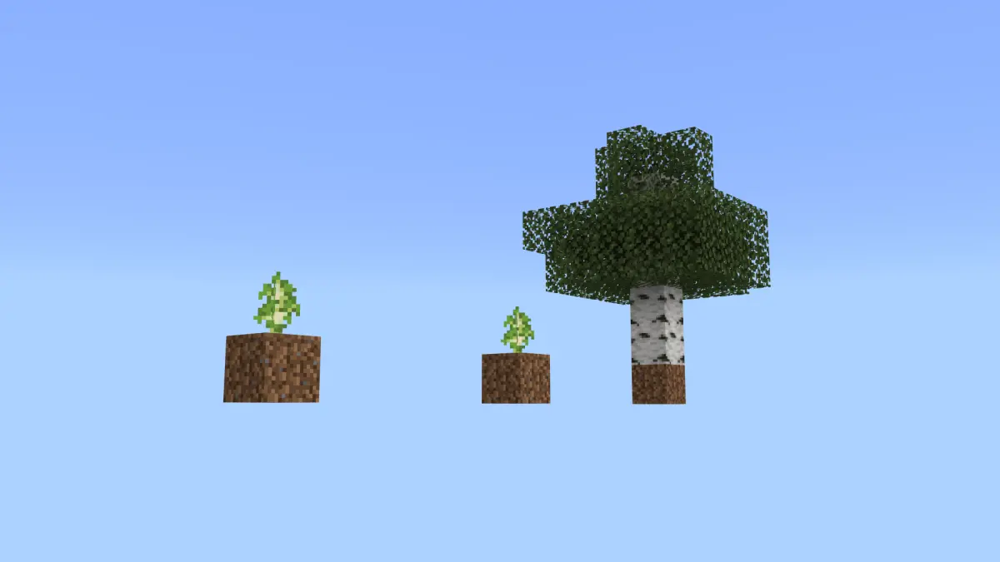
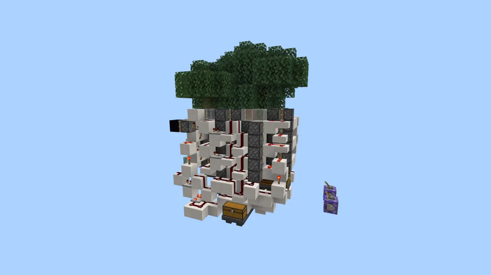
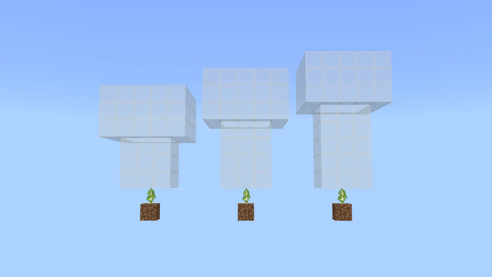
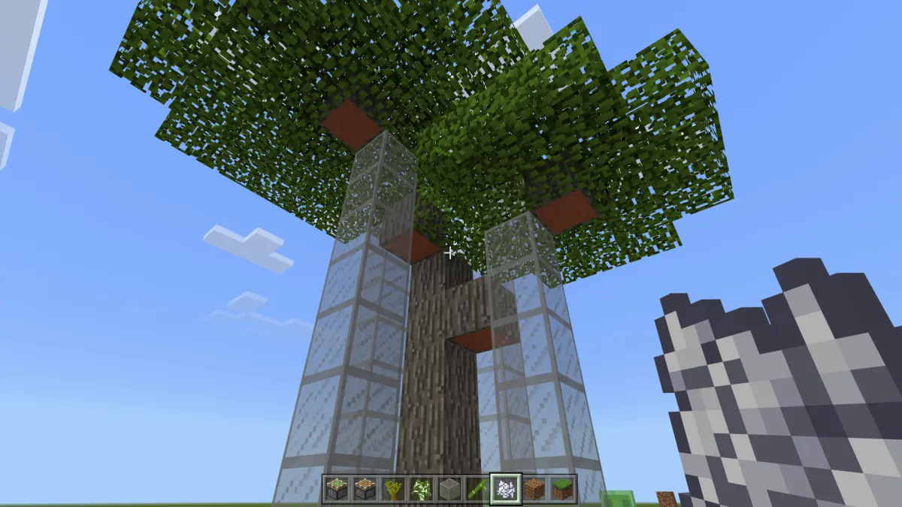
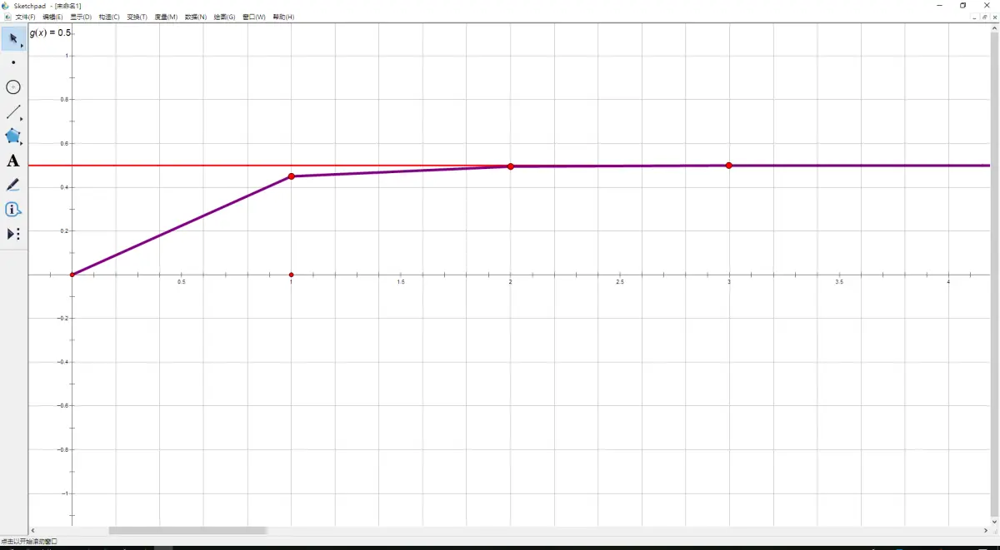

在对树场的长期探索和对树苗的大量实验中，我们发现BE和JE的树苗生长机制大部分相同，但是仍在几条重要机制上存在差异。因此我们通过对JE树苗生长理论进行修正，得到了BE树苗生长理论，希望这份理论能给追求BE树场极限效率的redstoner提供帮助。

某垃圾up摸了两年才摸出来的垃圾树场
为了理解树苗如何生长，我们先要知道树苗是什么。我们种下一颗树苗后，树苗以一个名为sapling的方块的形式存在世界中。这个名为sapling的方块有一个数据值，代表了树苗的品种和阶段。每一个品种的树苗都有两个可能的数据值，这两个数据值之差为8 。以白桦树苗为例，数据值为2或10的树苗都是白桦树苗。而区分两种数据值的意义就在于不同的数据值代表了树苗的处于不同的阶段。还是以白桦树苗为例，当我们种下它后，它的数据值为2 。此时的树苗我们称它处于第一阶段。通过生长，白桦树苗的数据值可以从2变成10，此时的树苗我们称它处于第二阶段。如果我们需要知道现在的树苗处于哪一阶段，可以使用cb执行/testforblock检查树苗的数据值。

使用cb执行/testforblock检查树苗的数据值
由此我们对树苗是什么，以及树苗的阶段已经有了一定的了解。接下来，我们需要理解什么是生长。第一阶段的树苗生长表现为数据值的变化，第二阶段的树苗生长表现为由树苗sapling方块变成由原木log/log2方块和树叶leaves/leaves2方块等组成的树。不难把生长定义为树苗sapling方块特有的一种方块变化。同时这里需要注意一个事实，就是游戏里的树苗生长的概念和现实生活中的树苗生长的概念的区别。现实生活中，树苗的生长是无时不刻在进行的事情，树苗一点点的长大，当然也不存在阶段。而在游戏中，树苗的生长是瞬间完成的事情。在生长事件中，第一阶段的白桦树苗数据值是直接从2瞬间跳到10。第二阶段的树苗生长成树也是一样的。树苗的一生中几乎所有时间啥都不干，只是在几个时间点经历瞬间完成的生长事件。这才是游戏里树苗生长的本质，也是游戏里树苗生长和现实中树苗生长的区别。

树苗生长：第一阶段 → 第二阶段 → 树
理清了几个关键的概念，终于可以开始说明树苗的生长机制了。。。
树苗被生存模式下的玩家使用骨粉，或被发射器发射骨粉，会有0.45的概率进行一次生长尝试。对第一阶段的树苗来说，生长尝试是一定成功的，结果就是数据值的变化。这个方块更新的过程无法被毒察检测到，但是可以被烧火把检测到。
对第二阶段的树苗来说，生长尝试的流程就比较复杂了。如果是橡树树苗，首先会在普通橡树OakFeature和大橡树FancyTreeFeature间随机选择树型，其中大橡树的权重为0.1 。大橡树的各种特性，影响，和对应的解决方式这里不再赘述，只说明普通树型接下来的流程。

万恶的大橡树和日常智障的up主
普通树型的橡树和其他的单核树场用树种都有一个主干高度范围，游戏首先根据树苗的不同，在相应的高度范围内随机选择一个数字，称为主干高度。提前说一句，对于云杉来说主干高度不一定是最终树的高度，对于合欢来说较高的侧枝高度就是之前所抽中的主干高度。主干高度可能的取值如下：
数据值 树种 高度
0 橡树 4,5,6
1 云杉 6,7,8,9
2 白桦 5,6,7
3 丛林 5,6,7
4 合欢 5,6,7,8,9
随机取得主干高度后，游戏会根据主干高度，检查一个像蘑菇一样形状的范围内的所有方块。下图依次是5,6,7的主干高度会检查的范围，我们可以看图找找规律：

5,6,7的主干高度会检查的范围
不难发现，每个检查范围顶部都有一个5*5*3的区域，我们称之为5*5区域，而向下还有3*3*(n-2)的柱状区域，我们称之为3*3区域。游戏会检查这些范围内的全部方块，判断其中是否存在除空气air，泥土dirt，树叶leaves/leaves2之外的方块 。如果不存在，生长尝试通过，将除了泥土之外的方块替换成树相应位置的方块，生长出一棵树。如果存在，生长尝试不通过，树苗回退到第一阶段。
看起来平平无奇是吗？确实没啥很特别的。但是你是否注意到以下几点了呢？

长成什么样和检查范围的形状没有关系
至此单核树场常用树种的树苗的生长原理已经基本明了。而树木的形态已经超出了这篇专栏的范围，也敬请参考其他人的源码解读，实验，等等。
然而这篇专栏至此就结束了吗？我可不打算。难得理清了完整的生长机制，为什么不再进一步，为树场的理论效率计算建立一个精确的数学模型呢？这可是和生长机制相关的。
首先考虑预催熟策略在BE的表现。在预催熟环境下，第二阶段的树苗是不可能生长成树的，因此生长回退现象造成的的影响极为显著。
每个骨粉有0.45的概率使树苗进行生长尝试，无疑第一阶段的树苗得到一份骨粉后有0.45的概率会生长到第二阶段，而第二阶段的树苗得到一份骨粉后也会有0.45的概率回退到第一阶段。每次生长尝试都是互相独立的，服从二项分布。综上直接套二项分布的公式，就得到了在接受n次催熟后有效催熟的次数为k的概率： P(x=k) = n!/(k!(n-k)!) * 0.45^k * (1-0.45)^(n-k) 不难理解，有效催熟次数为奇数时，树苗处于第二阶段。有效催熟次数为偶数时，树苗处于第一阶段。因为由之前的生长机制易知，树苗被阻碍无法生长时会在第一和第二阶段之间反复变化。所以处于第二阶段的概率，也就是我们想求出的预催熟成功率为： P(n) = ∑P(x=i)，(i=1,3,5,···,n，n为奇数 或 i=1.3.5,···,n-1，n为偶数） 为了简化计算，构建函数： f(x)=(0.45x+0.55)^n，n∈N 展开后偶数项系数之和就是上面的概率。计算偶数项系数之和只要赋值就行了： P(n) = (f(1)-f(-1))/2 = (1-0.1^n)/2
这个式子有什么意义呢？既然存在生长回退现象，很多人就会质疑BE预催熟超过一次是否反而会回退到第一阶段，过犹不及？这个猜想不无道理，在没有数学模型的前提下也确实难以凭直觉断言。那么，让我们来看看这个式子的函数图像：

P(n) = (f(1)-f(-1))/2 = (1-0.1^n)/2
在R+上这个函数是严格单调递增的，所以预催熟的次数越多。预催熟的成功率还是越高，不必担心过犹不及的问题。但是同时也暴露了一个问题，就是提高BE的预催熟次数能带来的提升微乎其微。大量的预催熟有用吗？有的。但是其实是只要有个几次就行了，贪多几乎就是浪费，毫无意义。
继续计算催熟的过程。假如第二阶段的树苗在第k次催熟的时候生长了，我们来看看它在之前的过程中经历了什么。首先肯定是k-1次的无效尝试，因为只要有一次是有效的，它早就长成树了，不会拖到第k次。同时，它肯定在第k次是有效催熟催熟，不然它也不会刚好在第k次催熟的时候生长。所以就可以计算预催熟成功的树苗在第k次催熟时生长成树的概率： P1(k)=0.55^(k-1)*0.45 同样的，假如有第一阶段的树苗在第k次催熟时生长成功，我们也可以用相同的方法计算，只是稍微复杂一点。它肯定在第一次到第k-1次催熟中有刚好一次有效催熟，k-2次无效催熟，并且在第k次也是有效催熟。又因为情况有(k-1)!/(1!*(k-2)!) = k-1种，所以预催熟失败的树苗在第k次催熟时生长成树的概率： P2(k)=(k-1)*0.55^(k-2)*0.2025 然后还需要一个函数是关于第k次催熟时距离上一棵树生长瞬间的时间间隔，记为t(k)。这个函数和每个树场的催熟策略有关，需要自己定义。 于是关于树场周期的期望（P0为预催熟成功率）： Et=P0(n)*∑(P1(i)*t(i))+(1-P0)*∑(P2(k)*t(i))，(i=1,2,3,···,∞) 至此速度计算方法已经基本清晰了，再引入一个变量h，为对每棵树的平均木头块数的期望。于是联立上面的公式，就得到了关于树场速度的期望： Ex = h*t/(1-0.1^n)/2*∑(0.55^(i-1)*0.45*t(i))+(1-P0)*∑((i-1)*0.55^(i-2)*0.2025*t(i))，(i=1,2,3,···,∞)
这个模型的意义也不仅仅是让你可以准确的计算出树场的理论效率，更重要的是它使你可以直接从数学上分析不同架构，不同催熟策略对树场效率的影响，从而直接对比各种策略的优劣。那么从中我们能发现一些什么有趣的推论呢？我就不放计算过程了，直接说结果吧。